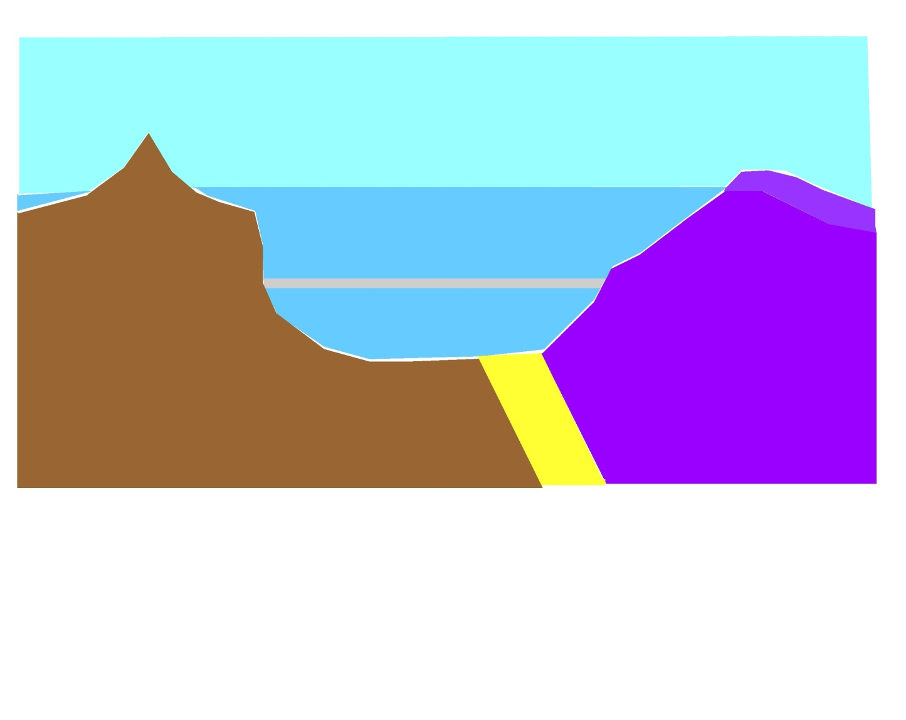
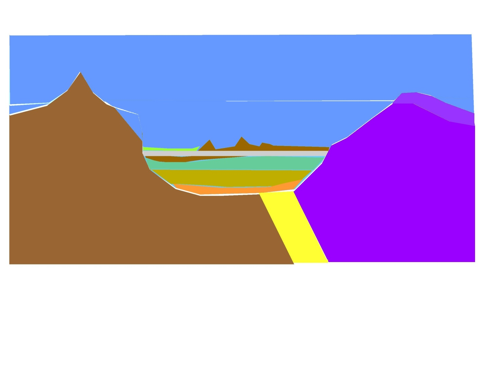
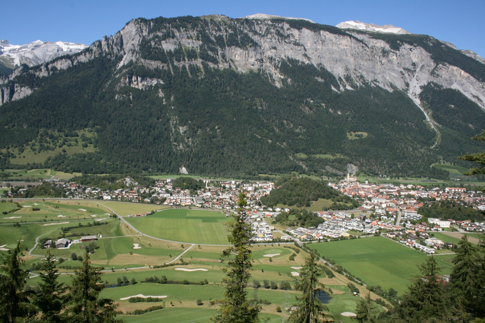
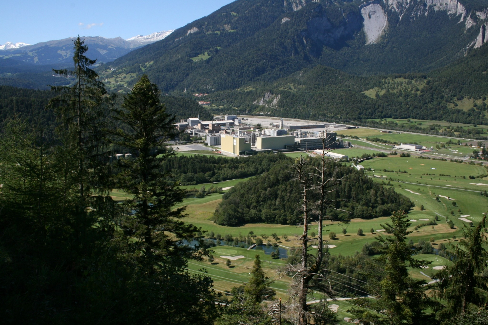

So ist unsere Landschaft entstanden
Warum gibt es die Tumas?
Domat/Ems liegt im Churer Rheintal auf einer Ebene zwischen dem Dreibündenstein im Süden und dem Calanda im Norden. Typisch für unser Dorf sind die zahlreichen Hügel – die Tumas.
Sie entstanden nach der letzten Eiszeit vor ungefähr 11’000 Jahren. Als der Gletscher abgeschmolzen war, rutschten grosse Mengen felsigen Materials von den Hängen. Es entstanden die Bergstürze von Flims, vom Kunkels und vom Calanda. Der Rhein suchte während einiger tausend Jahre immer wieder einen neuen Weg durch die Ebene. Die festeren Bergsturzreste sind als Hügel bis heute sichtbar.


Höre die Geschichte
Du kannst den Text lesen und gleichzeitig dem Hörbuch zuhören.


Wähle selbst